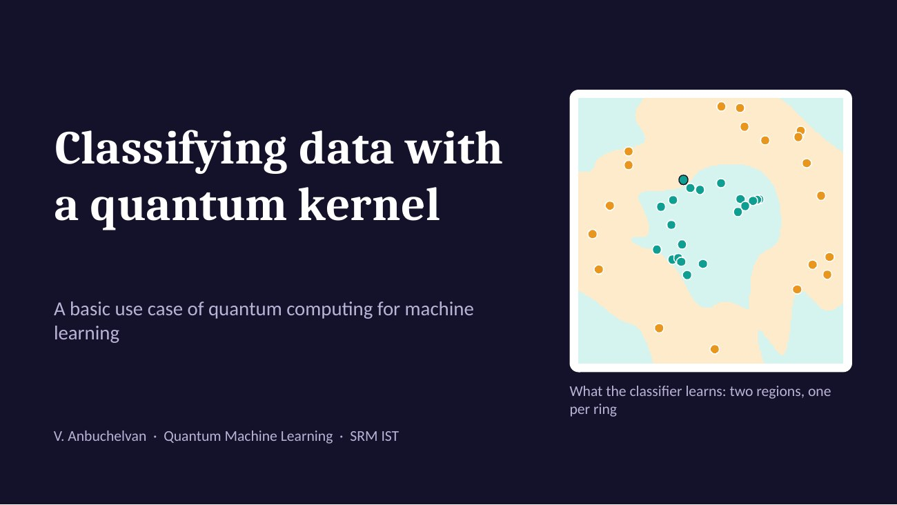

Quantum Machine Learning · course presentation
Classifying data with a quantum kernel
A support vector machine cannot split two rings with a straight line. Let a two-qubit circuit measure how similar each pair of points is, and the same algorithm draws the right boundary.
- 2qubits
- 60% → 97.5%test accuracy, straight line vs quantum kernel
- 3,160circuit pairs for 80 training points
Live demo
Everything below runs in this page. The two-qubit circuit is simulated exactly, so there is no noise.
- Training accuracy
- –
- Test accuracy
- –
- Support vectors
- –
- Circuit pairs
- –
The slides
Ten slides. Use the arrow keys or the buttons.

How it works
- 1
Encode
A circuit of Hadamard, phase and ZZ gates turns a point's two features into a two-qubit state.
- 2
Compare
Encode one point, undo the encoding of another, and measure. The chance of reading 00 is the similarity of the pair.
- 3
Train
Fill a matrix with those similarities and give it to an ordinary support vector machine.
This example does not show a quantum advantage. A classical RBF kernel does as well or better on these toy datasets, and two qubits are trivial to simulate. It shows the method.
The numbers on the slides come from experiment.js in the repository and can be reproduced with node experiment.js.